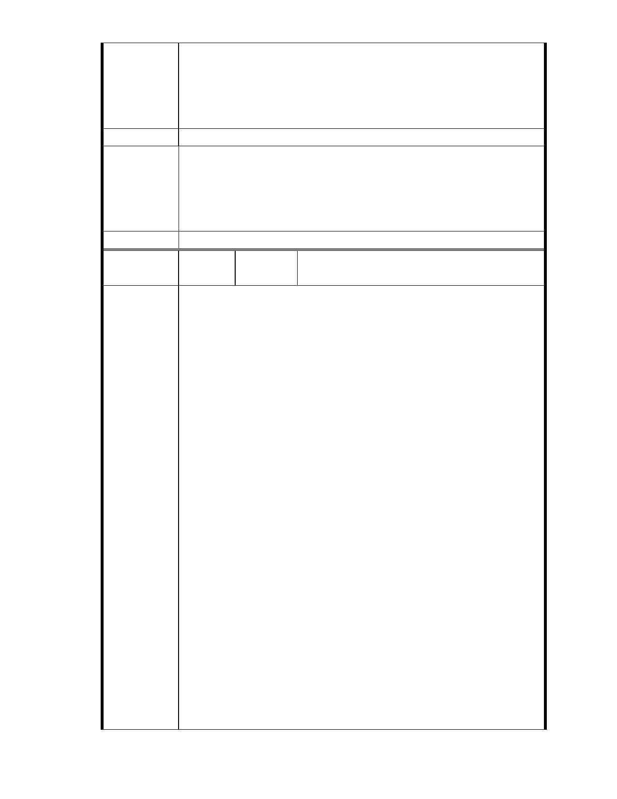

予補充劃設適當、必要的公共設施。」
本基地位於山坡谷地集水環境敏感區，應設置較平地較多之公共設施，
建議應至少留設計畫範圍 50％以上土地，作為沉砂滯洪池、排水道(明
渠)、綠地、停車場、道路…等必要之公共設施，並不得計入容積。
建議辦法
一、本案申請範圍於慈濟購得前已遭填平破壞作汽車停車場使用，已長
市府說明
年不具保護區之功能；目前申請方案較先前方案已大幅降低開發強
度、調整使用項目並承諾大面積滯洪設施等回饋事項，顯示申請單
位欲改善現況之誠意。
二、相關陳情意見將納入本案審查人民意見，依法定程序辦理。
委 員 會 決 議 同編號 1。
編
號 136
陳情人 陳 乃 立 （ MA201210300227 ）、 洪 美 惠
（MA201210300220）
主旨：
有關「變更臺北市內湖區成功路五段大湖公園北側部分保護區及道路用
地為社會福利特定專用區主要計畫案」及「擬訂臺北市內湖區成功路五
段大湖公園北側社會福利特定專用區細部計畫案」，依據都市計畫法第 19
條第三項規定，應再辦理公開展覽及舉行說明會，以利公民或團體依法
提出陳情意見，敬請查照。
說明
依據都市計畫法第 19 條第三項規定辦理。
陳情理由
旨揭變更案及新擬定案，為 94 年 3 月 31 日送件至 貴會審議之陳年舊案，
至今已超過 7 年又 7 個月餘，社會變遷與當時所提方案至今均變更甚鉅，
包括計畫範圍與面積、土地權屬、變更內容、開發方式、免實施環境影
響評估、免實施水土保持計畫、免交通影響評估、免提供公共設施、土
地使用計畫、建築配置計畫…等，均與 94 年 3 月 31 日所提方案迥然不同，
且多非經 貴委員會審議修正者，依規定應再辦理公開展覽及舉行說明
會。
有關本案早在 94 年 4 月 1 日起即辦理公開展覽，當時是否有將公開展覽
及說明會之日期及地點登報周知，惠請 貴會應再查明，不應有漏。
另有關 101 年 7 月 26 日府授都規字第 10134575500 號函送修正計畫書，
是否與 94 年 3 月 31 日所提原始計畫書迥然不同，惠請 貴會查明其中所
有變更與修正，是否均為經 貴委員會審議修正者，若非，依規定則應再
辦理公開展覽及舉行說明會。
- 150 -